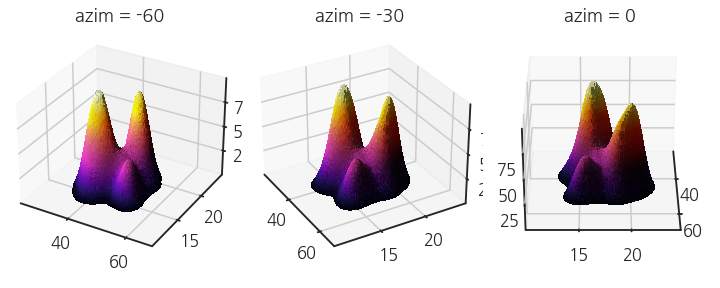

- Matplotlib으로 3D Plot을 할 수 있습니다.
- 많은 분들이 알고 있는 사실이지만 적극적으로 쓰이지 않습니다.
- seaborn KDE plot을 3D로 표현합니다.
5. KDE plot
- 2D KDE plot은 전달력이 좋고, 은근 예쁘기도 합니다.
- 두 인자의 상관 분포를 표현하는 그림으로, 데이터의 밀도를 선이나 색으로 나타냅니다.
- 2D 공간을 벗어나 3D로 데이터를 표현합니다.
5.1. 2D KDE plot
라이브러리 및 시각화 환경을 초기화합니다.
1
2
3
4
5
6
7
8
9
10
11
12
13%matplotlib inline
import numpy as np
import pandas as pd
import matplotlib.pyplot as plt
import seaborn as sns
sns.set_style("ticks")
sns.set_palette("colorblind")
sns.set_context("talk")
plt.rcParams['font.family']='NanumGothic'
plt.rcParams['axes.unicode_minus'] = False펭귄 데이터셋을 이용해 2D KDE plot을 그립니다.
colormap은 inferno를 선택합니다.
이미지를 다시 2D data로 변환하려면 lightness가 data 값에 비례하야 하는데
perceptual uniform colormap 중 inferno의 범위가 가장 넓기 때문입니다.
1
2
3
4
5df_peng = sns.load_dataset("penguins")
fig, ax = plt.subplots(figsize=(5, 5), constrained_layout=True)
sns.kdeplot(x="bill_length_mm", y="bill_depth_mm", data=df_peng, ax=ax,
fill=True, levels=100, cmap="inferno")실행 결과
5.2. 2D image to 2D data
x, y limit가 데이터 값에 따라 자동으로 설정되었지만 값을 다듬습니다.
향후 2D 데이터를 불러왔을 때 x, y 범위를 사용해야 하는데, 유효숫자가 너무 많으면 불편합니다.
소숫점 둘째 자리까지 반올림을 합니다.
Axes spines 등 불필요한 요소를 모두 제거합니다.
1
2
3
4
5
6
7
8
9
10
11
12
13
14
15
16# x, y 범위 반올림 재설정
xmin, xmax = np.round(ax.get_xlim(),2)
ymin, ymax = np.round(ax.get_ylim(),2)
print(f"xmin, xmax = {xmin}, {xmax}")
print(f"ymin, ymax = {ymin}, {ymax}")
ax.set(xlim=(xmin, xmax), ylim=(ymin, ymax))
# 윤곽선 눈금
ax.axvline(xmin, lw=0.01, c="green")
ax.axvline(xmax, lw=0.01, c="green")
ax.axhline(ymin, lw=0.01, c="green")
ax.axhline(ymax, lw=0.01, c="green")
ax.axis(False)
fig.savefig("KDE_peng.png")
display(fig)실행 결과
1
2xmin, xmax = 25.91, 65.79
ymin, ymax = 10.86, 23.74x, y 데이터의 최소와 최대 범위에 green line을 그렸습니다.
image를 file로 저장할 때 몇 픽셀 가량의 여백이 생기기 때문에 이를 확인하고 제거하기 위함입니다.
그림파일을
im_pengkde라는 이름으로 불러온 뒤, [:10, :10] 영역의 데이터를 출력해 green line을 확인합니다.1
2plt.imshow(im_pengkde[:10, :10])
- 실행 결과
- 실행 결과
pixel을 눈으로 볼 수 있을 만큼 확대를 해보니 green line 두께는 1 pixel입니다.
그리고 그 밖으로 약간의 여백이 있습니다.
이 여백의 폭을 확인한 후 1 pixel을 더한 범위만큼 사방에서 잘라냅니다.
1
2
3
4
5
6import matplotlib.colors as mcolors
idx_gx, idx_gy, _ = np.where(im_pengkde[:5, :5] != mcolors.to_rgba("w"))
im_pengkde= im_pengkde[idx_gx[0]+1:-idx_gx[0]-2, idx_gy[0]+1:-idx_gx[0]-2]
print(im_pengkde[:2, :2])
print(im_pengkde.shape)실행 결과
1
2
3
4
5
6[[[1. 1. 1. 1.]
[1. 1. 1. 1.]]
[[1. 1. 1. 1.]
[1. 1. 1. 1.]]]
(351, 351, 4)image size가 (351, 351)로 확인됩니다.
잘 제거되었나 확인합니다.
1
2plt.imshow(im_pengkde[:10, :10])
5.3. data = colormap intensity
inferno colormap에서 data intensity는 lightness에 비례합니다.
colorspacious라이브러리의cspace_converter를 사용해 RGB를 Lab으로 변환합니다.Lab color space의 첫 번째 요소가 lightness입니다.
데이터가 없는 하얀 색 구간이 있습니다. 여기는 데이터가 있는 부분과 구별되도록 -1을 입력합니다.
1
2
3
4
5
6
7
8
9
10
11from colorspacious import cspace_converter
im_pengkde_L = np.zeros(im_pengkde.shape[:2])
for i in range(im_pengkde.shape[0]):
for j in range(im_pengkde.shape[1]):
RGB = im_pengkde[i, j][:3]
if sum(RGB - np.array([1, 1, 1])) == 0:
im_pengkde_L[i, j] = -1
else:
lab = cspace_converter("sRGB1", "CAM02-UCS")(RGB)
im_pengkde_L[i, j] = lab[0]im_pengkde_L에 lightness를 입력했습니다.
확인을 위해 inferno colormap을 적용해 image로 출력합니다.
아까 저장해 둔 xmin, xmax, ymin, ymax를
extent에 넣어 범위를 올바르게 표현하고aspect에 x, y 범위의 비율을 입력해 그림이 정사각형으로 표현되도록 조정합니다.1
2
3plt.imshow(im_pengkde_L, cmap="inferno",
extent=[xmin, xmax, ymin, ymax],
aspect=(xmax-xmin)/(ymax-ymin))정상적으로 출력되었습니다.
하얀 색 부분이 검게 표현되었는데, 이 부분에 입력한 -1이 inferno colormap에서 최소값으로 감지되었기 때문입니다.
6. 3D plot
Pega Devlog: Matplotlib 3D Plots(2)
matplotlib: Axes.plot_surface()
- 데이터를 추출했으므로 3D plot을 시작할 차례입니다.
6.1. plot_surface()
Axes.plot_surface()등 명령어가 받아들이는 형식으로 데이터를 마련해야 합니다.np.meshgrid()로 데이터 범위에서 mesh grid를 생성합니다.1
2
3
4
5
6
7
8
9# mesh grid 생성
xs = np.linspace(xmin, xmax, im_pengkde.shape[1])
ys = np.linspace(ymin, ymax, im_pengkde.shape[0])
xx, yy = np.meshgrid(xs, ys)
# 3D plot
fig, ax = plt.subplots(figsize=(5, 5), constrained_layout=True,
subplot_kw={"projection":"3d"})
ax.plot_surface(xx, yy, im_pengkde_L)mesh로 이루어진 3D surface plot이 생성되었습니다.
앞에서 (351, 351)로 확인한 것 치고는 mesh 밀도가 너무 낮습니다.
6.2. rstride, cstride
Axes.plot_surface()는 모든 mesh를 보여주지 않스빈다.row를
rstride만큼 건너뛰고 column을cstride만큼 건너뛰는데 기본값이 10입니다.rstride=1,cstride=1을 입력해 모든 mesh를 출력합니다.1
2
3fig, ax = plt.subplots(figsize=(5, 5), constrained_layout=True,
subplot_kw={"projection":"3d"})
ax.plot_surface(xx, yy, im_pengkde_L, rstride=1, cstride=1)mesh가 너무 많아 하얗게 뒤덮여 버렸습니다.
우리가 원하는 것은 매끈한 표면이지 복잡한 mesh가 아닙니다.
lw=0으로 mesh를 지웁니다.1
2
3fig, ax = plt.subplots(figsize=(5, 5), constrained_layout=True,
subplot_kw={"projection":"3d"})
ax.plot_surface(xx, yy, im_pengkde_L, rstride=1, cstride=1, lw=0)이제 형태가 좀 잘 보입니다.
6.3. colormap
데이터 값이 z축에 드러나있지만 어디까지나 상대적인 밀도입니다.
절대적인 수치는 별 의미가 없지만 상대적인 대소는 의미가 있습니다.
cmap매개변수로 colormap을 적용해서 높은 봉우리가 잘 드러나게 합니다.1
2
3fig, ax = plt.subplots(figsize=(5, 5), constrained_layout=True,
subplot_kw={"projection":"3d"})
ax.plot_surface(xx, yy, im_pengkde_L, rstride=1, cstride=1, lw=0, cmap="inferno")colormap이 적용된 결고 왼쪽 봉우리가 오른쪽보다 높다는 사실이 한 눈에 드러납니다.
왠지 뒤쪽이 비쳐보이는 바람에 다소 혼란스럽기도 합니다.
antialiased=False를 적용합니다.1
2
3
4fig, ax = plt.subplots(figsize=(5, 5), constrained_layout=True,
subplot_kw={"projection":"3d"})
ax.plot_surface(xx, yy, im_pengkde_L, rstride=1, cstride=1, lw=0, cmap="inferno",
antialiased=False)
6.4. mask
numpy: The numpy.ma module
scipy: Matplotlib: plotting values with masked arrays
matplotlib: Plotting masked and NaN values
- 우리가 사용하는 데이터는 penguins dataset의 2D KDE plot에서 온 것이고,
- 데이터 값이 존재하지 않는 범위가 적지 않습니다.
- 이 부분이 데이터 밀도가 매우 작은 부분과 혼동되기 때문에, 제거하는 편이 깔끔합니다.
np.ma.masked_array()를 사용해 데이터 값이 0 이하인 부분을 제거합니다.1
2
3
4
5
6im_pengkde_L_masked = np.ma.masked_array(im_pengkde_L, im_pengkde_L <= 0)
fig, ax = plt.subplots(figsize=(5, 5), constrained_layout=True,
subplot_kw={"projection":"3d"})
ax.plot_surface(xx, yy, im_pengkde_L_masked, rstride=1, cstride=1, lw=0,
cmap="inferno", antialiased=False)
6.5. LightSource
- 3D 객체는 빛이 들어오는 방향과 빛을 가리는 물체에 의해 밝은 부분과 그림자가 생깁니다.
- 이를 계산해 적용해주는 모듈이
LightSource입니다. ls = LightSource()에azdeg과altdeg으로 방위각과 고도각을 입력한 후,rgb = ls.shade()로 face마다 그림자를 계산합니다.- 마지막으로
Axes.plot_surface()에facecolors=rgb를 넣어 계산된 값을 면에 입혀 출력합니다.1
2
3
4
5
6
7
8
9
10
11from matplotlib.colors import LightSource
# Light Source object 생성
ls = LightSource(azdeg=-45, altdeg=30)
# shade 생성
rgb = ls.shade(im_pengkde_L, plt.get_cmap("inferno"))
fig, ax = plt.subplots(figsize=(5, 5), constrained_layout=True,
subplot_kw={"projection":"3d"})
ax.plot_surface(xx, yy, im_pengkde_L_masked, rstride=1, cstride=1, lw=0, antialiased=False,
facecolors=rgb)
6.6. rotation
3D 객체는 일부분이 필연적으로 가려져 데이터 전달 효율이 떨어집니다.
이를 보완하기 위해 회전을 시키는 방법이 많이 사용됩니다.
방위각을 나타내는
azim에 기본값인 -60 외에 -30과 0을 입력한 결과를 함께 그립니다.1
2
3
4
5
6
7
8
9
10fig, axs = plt.subplots(ncols=3, figsize=(10, 4), constrained_layout=True,
subplot_kw={"projection":"3d"})
elev = 30
azims = [-60, -30, 0]
for ax, azim in zip(axs, azims):
ax.plot_surface(xx, yy, im_pengkde_L_masked, rstride=2, cstride=2, lw=0, antialiased=False,
facecolors=rgb)
ax.view_init(elev, azim)
ax.set_title(f"azim = {azim}")
방위각에 따라 보이지 않던 부분이 드러나고 있습니다.
종이에 인쇄되는 환경이 아닌 웹 등으로 데이터를 전달한다면 애니메이션을 만들어 전달할 수 있습니ㅏㄷ.
1
2
3
4
5
6
7
8
9
10
11
12
13
14
15
16
17
18
19
20
21
22
23
24
25
26
27from matplotlib import animation
fig, ax = plt.subplots(figsize=(5, 5), constrained_layout=True,
subplot_kw={"projection":"3d"})
fontlabel = {"fontsize":"large", "color":"gray", "fontweight":"bold"}
def init():
ls = LightSource(azdeg=-45, altdeg=30)
rgb = ls.shade(im_pengkde_L, plt.get_cmap("inferno"))
ax.set_xlabel("bill length (mm)", fontdict=fontlabel, labelpad=16)
ax.set_ylabel("bill depth (mm)", fontdict=fontlabel, labelpad=16)
ax.set_title("Kernel Density", fontdict=fontlabel)
ax.plot_surface(xx, yy, im_pengkde_L_masked, rstride=1, cstride=1, lw=0, antialiased=False,
facecolors=rgb)
return fig,
def animate(i):
ax.view_init(elev=30, azim=i)
return fig,
# Animate
anim = animation.FuncAnimation(fig, animate, init_func=init,
frames=360, interval=20, blit=True)
# Save
anim.save('108_mpl3d3_rot_01.gif', fps=30)
7. 결론
- 2D KDE plot을 3D로 바꾸어 표현할 수 있음을 확인했습니다.
- 3D plot은 데이터의 정확한 전달력보다 독자의 주의를 끄는 데 유리합니다.
- 적절한 순간에 필요한 기능을 능동적으로 사용할 수 있기 바랍니다.